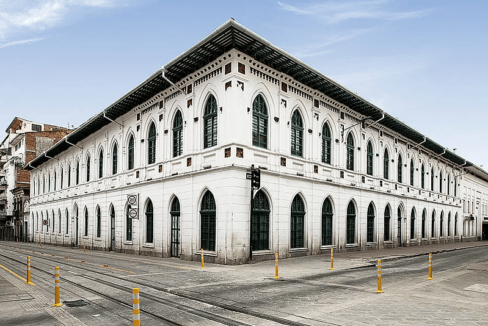
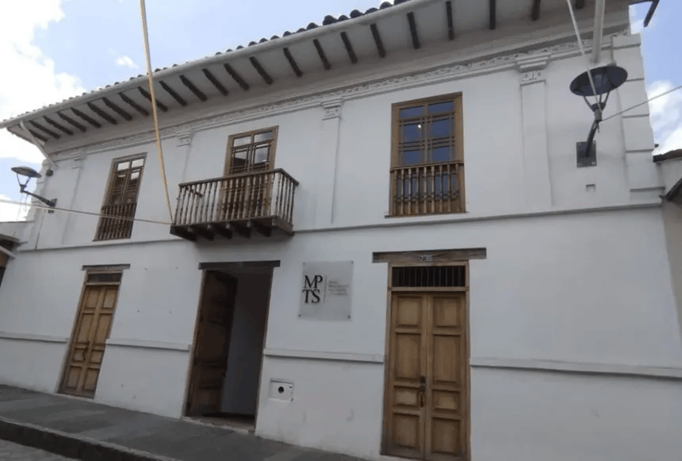
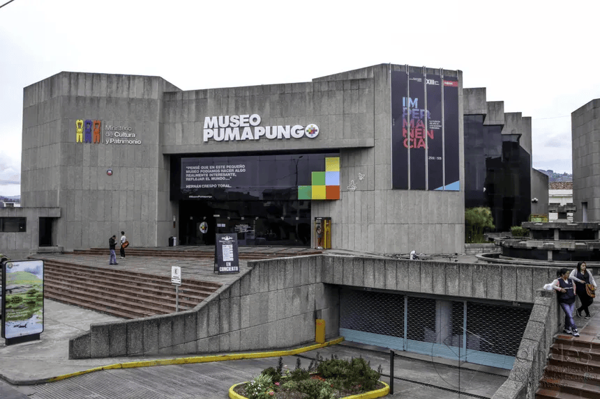
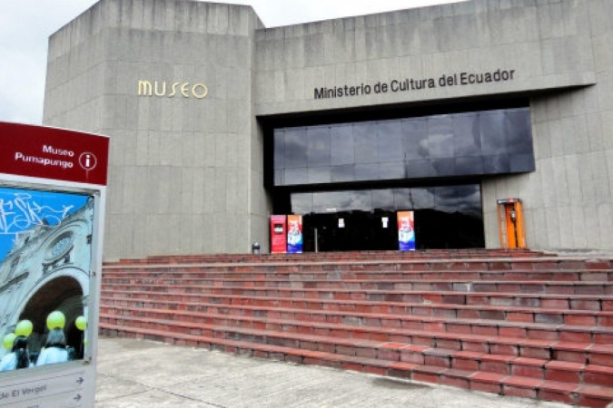

Museos de Cuenca
Aquí encontrarás los principales museos de la ciudad, su horario y ubicación. Haz clic en “Ver detalles” para descubrir más sobre cada uno.
Casa Museo Remigio Crespo Toral

Escuela Central / Museo de la Ciudad

Museo Municipal de Arte Moderno “Carlos Cueva Tamariz”

Museo de Arte Religioso “Catedral Vieja” (Iglesia del Sagrario)

Museo Municipal de la Paja Toquilla y el Sombrero

Museo y Parque Arqueológico Pumapungo

Museo de las Culturas Aborígenes

Casa – Museo Banco Central (Museo de la Moneda)

Museo de las Conceptas

Museo de la Identidad Cañari

×
Eventos culturales en Cuenca
Noche de Museos
Viernes, 28 de junio 2025
Disfruta de visitas nocturnas, música en vivo y muestras de arte en los principales museos del centro histórico.
Taller de arte para niños
Sábado, 6 de julio 2025
Actividad gratuita en el Museo Remigio Crespo, incluye materiales y certificado. Cupos limitados.